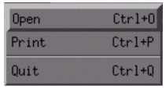
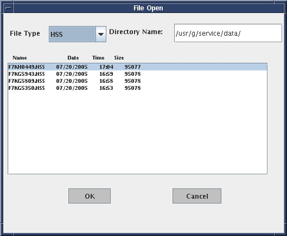

GE Exclusive Use Only
Direction 5670000, Rev# 1
Optima MR450w 1.5T Service Methods
Module Version 3.0, Version Date 6/3/09
GE Exclusive Use Only |
The Report Manager tool is used to view MR test result data files (“T-tests”) on the host computer.
To open the Report Manager tool, follow the steps explained on Illustration 1.
Illustration 1: Starting the Report Manager Tool

When prompted for your password, type mrgo1 and press <Enter>.
When the Report Manager tool starts, the main menu displays. The window is divided into three tiled parts: the menu bar, the data window and the plot window.
The menu bar, at the top, allows you to select different data manipulation and display options. The five menu options are File, View, Report, Trend, and Help. Each option has its own pull-down sub-menu featuring related tasks.
The data window, which provides data visualization, trend analysis and an auto-data sheet generator, has the capability to scroll both in vertical and horizontal directions.
The plot windows can display up to four plots per group (also called page).
Illustration 2: Report Manager Main Menu

The File menu has a pull-down sub-menu. The available options are: Open, Print, and Quit.
Illustration 3: File Menu

Select [Open] to launch a window displaying the list of available test files. The default directory name is displayed along with the test file names residing in that directory (/usr/g/service/data on the host computer). Select a file to highlight the file name and click [OK] to display the contents of the file in the data window.
You can view a list of files by selecting the file type from the File Type drop-down menu. The data directory can be changed from the default by typing a different directory name.
| NOTE: | You can also open the window by pressing <Ctrl + O>. |
Illustration 4: File Manager “Open” Window

This option prints a particular report file or the active screen to the default media. The media can be a printer or a postscript file. This application uses the system’s default printer.
Illustration 5: Print Dialog Box

Select [Quit] and click [Yes] to confirm the option when the Really Quit confirmation dialog box displays. You can also select this option by pressing <Ctrl + Q>.
The test files usually consist of several groups. A group consists of data and may contain one or more plots. The View menu allows you to navigate between different data sets and plots. Use the [Next] and [Previous] buttons to navigate within the selected test file. The application displays all the valid group numbers for the selected test file. By default, the group numbering starts at zero. You can also navigate between data sets using the Group List drop-down menu.
This option is used to generate two types of reports: PM Data Sheet and Group Report. The “T-test” data sheets can be generated automatically.
This option automatically fills in a PM data sheet from a “T-test” data file (see Illustration 6). Select a PM data sheet name, provide your name, and the tool automatically fills the blanks and displays the data in the data display area.
For example, to choose the 1.0T SST Head data sheet, select 10tSSTh. Refer to Illustration 7 for an example data (1.5T) sheet. The PM data sheets can also be generated by pressing <Ctrl + A>. PM data file names are shown in Table 1.
Illustration 6: PM Data Sheet Menu

Illustration 7: PM Data Sheet Example

Table 1: 1.5T Data File Names
| FILENAME | DESCRIPTION |
| 15rfth_by | 1.5T RFT - Head |
| 15rfth_en | 1.5T RFT - Head |
| 15rftb_by | 1.5T RFT - Body |
| 15rftb_en | 1.5T RFT - Body |
| 15SSTb | 1.5T SST - Body |
| 15SSTh | 1.5T SST - Head |
The group report allows you to report all the groups in the test file at one time, or specify which groups to display. You can specify your name and select the groups that need to be included in the report. The group report displays in the data display area. This option can also be selected by pressing <Ctrl + G>.
The trend option is not implemented at this time.
The help menu provides information about the Report Manager and its functions.